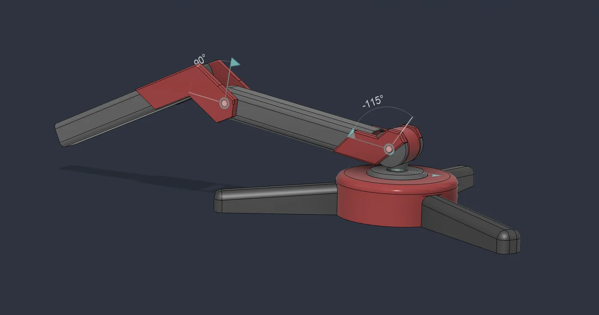
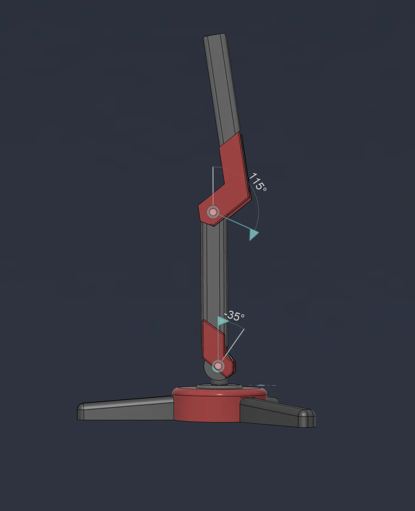

Project 03 · 2026
6-Axis Robot Arm Controller
Firmware for a 6-servo robot arm on an STM32 Blackpill, plus a PyQt6 desktop app that controls it over USB.
03.1Summary
I wrote firmware and a desktop app to control a six-servo robot arm from a computer. The STM32 shows up as a virtual serial port over USB-CDC, so no separate USB-UART converter is needed.
The command set is deliberately plain text: the same commands can be sent from the GUI or from a serial terminal such as screen. That makes it easy to test the hardware independently of the GUI.
03.2Block diagram
03.33D model




03.4Hardware
| MCU | STM32 Blackpill F411CE |
|---|---|
| Actuators | 6 × PWM servo |
| PWM | 50 Hz (20 ms), 16-bit resolution; 0° = 1000 µs, 90° = 1500 µs, 180° = 2000 µs |
| Timers | TIM1 CH1–3 (PA8, PA9, PA10) · TIM4 CH1–3 (PB6, PB7, PB8) |
| Power | Separate 5 V / 10 A supply for the servos; the STM32 is powered from USB |
| Comms | USB-CDC, 115200 baud |
duty = (pulse_us × 65535) / 20000
0° → (1000 × 65535) / 20000 = 3277
90° → (1500 × 65535) / 20000 = 4915
180° → (2000 × 65535) / 20000 = 6554Common ground: if the servo supply's negative terminal is not tied to the STM32 GND, the PWM reference floats and the servos do not move. 100 µF capacitors at the servo connectors reduce voltage dips during current spikes.
03.5Software
| Command | Function | Example |
|---|---|---|
S<n>:<angle> | Move servo n to angle (n = 1–6, angle = 0–180) | S1:90 |
ALL:<angle> | Move all servos to one angle | ALL:90 |
STATUS | Report all angles | S1:90,S2:45,… |
RESET | Return all servos to 90° | RESET |
Bad commands get explicit error replies (ERROR:Angle out of range, ERROR:Servo ID out of range, etc.). The GUI has a slider and min/max limits per servo; HOME, RESET and STATUS buttons send the same commands. On macOS the GUI can be bundled into a single .app with py2app.
03.6Links
- GitHubFatihAksoyEEE/RoboArm ↗